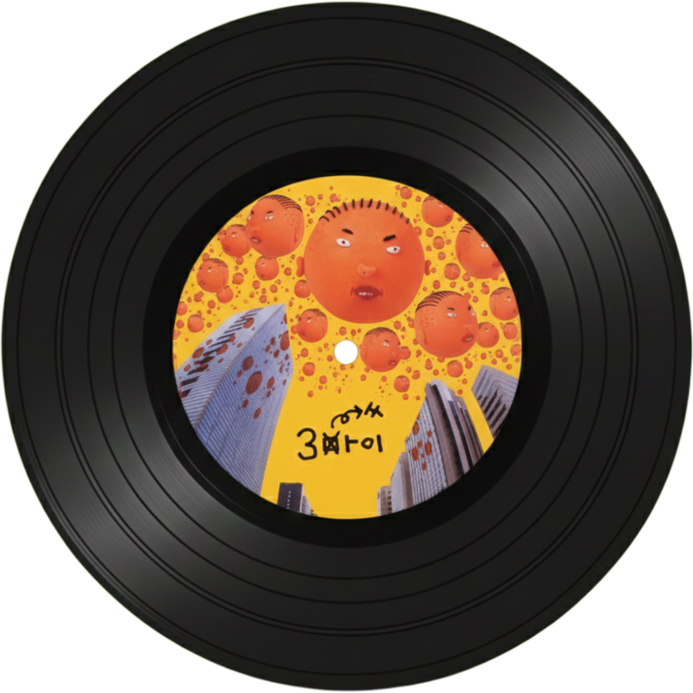
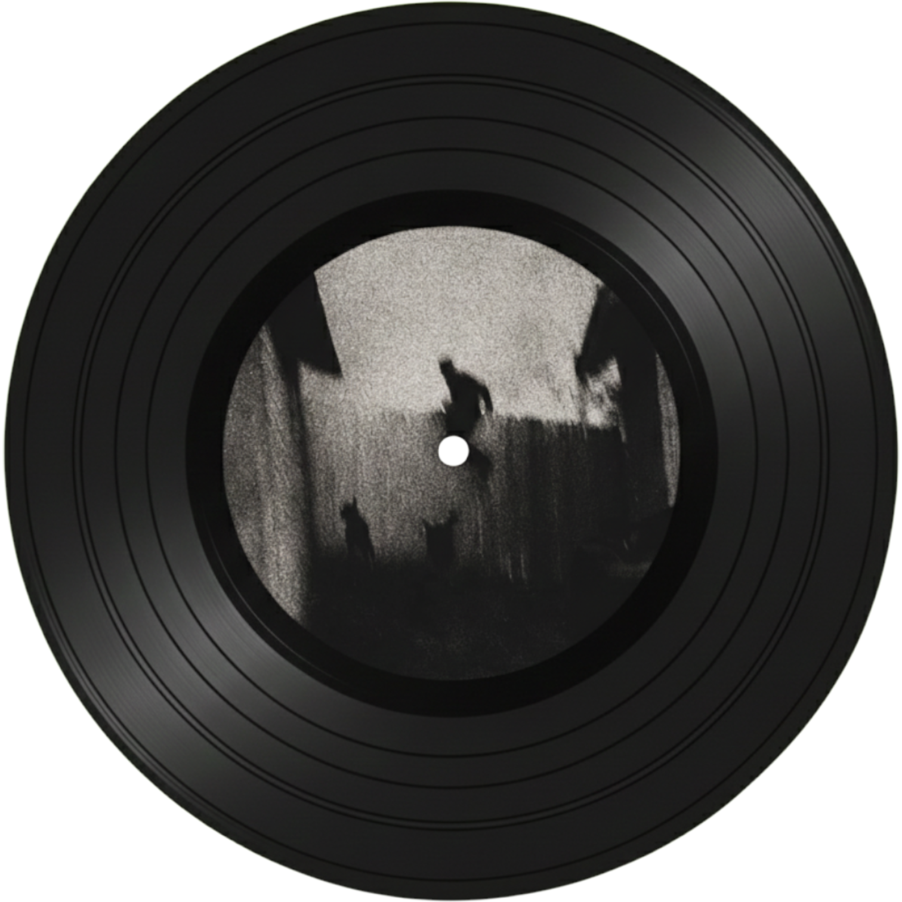

Travis Scott

Jacques Bermon Webster II
국적: 🇺🇸미국 텍사스 휴스턴
출생: 1991년 4월 30일
레이블: Cactus Jack Records
데뷔: 2013년

90210 (feat. Kacy Hill)
몽환적인 보컬과 압도적인 비트 변환이 인상깊은 곡이다. 제목 90210은 미국의 베벌리힐스의 우편번호다.
sdp interlude
반복적인 가사와 백그라운드 보컬의 목소리가 기억에 남는 곡이다.
I KNOW?
부드럽게 흐르는 신스와 몽환적인 분위기가 매력적이다.

DUMBO
묵직한 베이스 라인과 공간감 있는 멜로디가 특징이다.